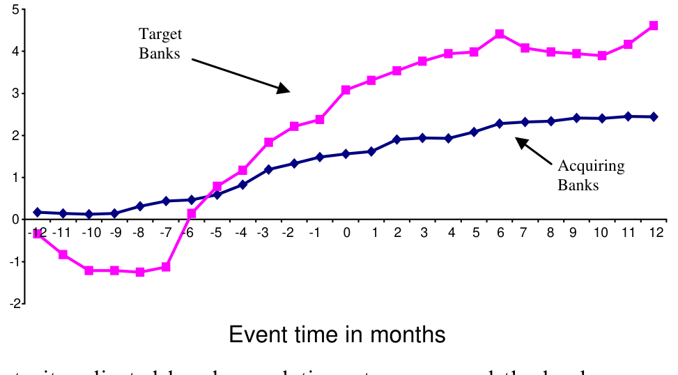
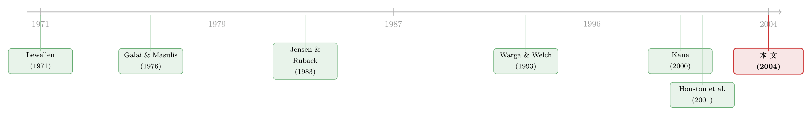

刚跨过「大到不能倒」那道线，债主就笑了
本文读的是 Penas & Unal (2004, JFE)：在银行并购里，收购方和被收购方的债权人都赚到了经过风险与期限调整的正超额债券收益——被收购方在并购前七个月加公告月累计 4.33%，收购方 1.24%。更妙的是，收益并不随银行规模单调上升：真正赚得最多的，是那些刚好凭这桩并购把自己推过「大到不能倒」门槛的中型银行，而早已是巨无霸、或离门槛还很远的银行，债主收益反而平平。
1 一个反直觉的开场
先讲一个金融学里几乎成了「常识」的故事。
公司并购，对股东是一场关于协同效应的赌局；但对债权人，传闻里往往是坏消息。原因有二：一是赢家诅咒、过度支付，二是更阴险的——并购后公司加杠杆，把原来债主头上的「安全垫」抽走，财富从债主口袋悄悄转移到股东口袋。所以在大量非金融并购的实证里，债券的超额收益要么是负的，要么是「干净的零」。
可是，如果我把镜头对准银行，这个故事会整个翻过来。
Penas 和 Unal 翻遍了 1991–1997 年美国商业银行之间的并购，去看债券市场怎么反应。结果出乎意料地干净：无论你是收购方还是被收购方，债权人都拿到了显著为正的风险与期限调整后收益。公告当月，被收购方债主就赚了 0.7%（t = 2.777），而收购方那一个月只有微不足道的 0.074%（不显著）。把视野拉长到并购前那连续七个月再加上公告月，被收购方债主累计赚到 4.33%，收购方也有 1.24%。
注意这里的「调整后收益」不是裸收益。作者沿用 Warga & Welch (1993) 的做法，把每只债券的月度收益，减去一只在评级和期限上都与它匹配的美林公司债指数的收益。所以这 4.33% 不是利率下行带来的普涨，而是「这只银行债跑赢了同评级、同期限的一篮子债券」的部分。
于是，一个自然的问题冒出来了：为什么偏偏是银行？
2 三个嫌疑人
债主在并购里能赚钱，逻辑上无非三条路。作者把它们一一摆上台面。
第一个嫌疑人：协同效应（synergy）。 如果并购真能把蛋糕做大——规模经济、范围经济、踢掉低效管理层——那公司整体价值上升，股东债主都受益（这是 Jensen & Ruback, 1983 的经典论断）。
第二个嫌疑人：多元化与共保（diversification / coinsurance）。 即便没有任何协同，只要两家银行的现金流不完全相关，合并后整体的违约风险也会下降。这就是 Lewellen (1971)、Higgins & Schall (1975)、Galai & Masulis (1976) 讲的「共保效应」：两份相互独立的现金流捆在一起，违约概率下降，债更值钱。
但银行有它特殊的两层复杂性。其一，银行受资本监管约束，股东没法像非金融公司那样，事后简单地加杠杆把共保给债主的好处再抢回去——所以在银行里，共保效应更可能「真金白银」地留在债主手上。其二，也是最有意思的——
第三个嫌疑人：大到不能倒（too-big-to-fail, TBTF）。 如果合并后的银行大到让联邦存款保险公司不敢让它倒，那么它所有的无保险负债实际上都获得了一份政府的隐性担保。对债主来说，这等于凭空多了一张「国家兜底」的保单。Kane (2000) 提醒我们，即便 1991 年的《联邦存款保险公司改进法案》(FDICIA) 想关掉这扇门，它仍留了一个「系统性风险例外」的口子。
接着，一个更尖锐的问题来了：这三个嫌疑人长得太像了——它们都会让债券收益变正。怎么把它们分开？
3 真正关键的一步：把「规模」做成一把分得开的尺子
这正是这篇论文最聪明的地方。
作者构造了一个横截面回归，用并购前后银行的各种特征去解释公告月的调整后债券收益 AR。方程长这样：
逐个看这几个控制变量的用意：
CVOL衡量多元化。它先把收购方和目标行的股权按资产权重拼成一个组合，算出组合波动率VOL_P，再和单体波动率比。组合波动率怎么来？就是教科书里那条方差公式：
$$ VOL_P = \sqrt{\, w_A^2\, VAR_A + w_T^2\, VAR_T + 2\, w_A w_T\, COV_{AT} \,} $$
这里 VAR_A、VAR_T 是收购方与目标行并购前一年周度股权收益的方差，COV_AT 是两者协方差，w 是资产权重。两家银行收益相关性越低，COV_AT 越小，VOL_P 压得越低，多元化收益越大。CVOL 越负 → 分散越彻底 → 债越值钱，所以预期 b1 < 0。
-
INOUT是跨州并购的虚拟变量，抓地理多元化；CNPL控制不良贷款率的变化（资产质量恶化会推高违约风险，预期为负）；CLEV控制杠杆率的变化（加杠杆伤债主，预期为负）。 -
真正的主角是
LISIZE（增量规模的对数）和那两个虚拟变量DBIG、DSML。
为什么靠规模就能把 TBTF 从协同、多元化里剥出来？因为 TBTF 的逻辑是非单调的：
如果一家银行本来就已经大到不能倒（DBIG = 1，资产超过全行业的 2%，样本里 8 家），那它再并购、再变大，并不会新增任何「国家兜底」的好处——保单它早就有了。反过来，一家离门槛太远的小银行（DSML = 1，资产不到行业的 0.35%，样本里 18 家），就算并购也够不着 TBTF，也拿不到这份好处。只有那些卡在中间、刚好凭这桩并购把自己推过门槛的中型银行，才是这项政策的真正受益人。
所以 TBTF 假说给出一个非常具体、可证伪的预言：b7 < 0 且 b8 < 0——大行和小行的债主收益，都应当低于中型行。这是一个协同效应和多元化都给不出的预言（那两条逻辑下，规模越大一般好处越多，是单调的）。
于是，反转出现了。
4 中型银行的债主，笑得最甜
先看描述性证据。把样本按规模切成三档——巨型 (BIG)、中型 (MID)、小型 (SML)——公告月的平均调整后收益分别是：BIG 0.20%、MID 0.36%、SML −0.11%。中型行最高，小型行甚至是负的。
控制住多元化程度、地理重叠、预期杠杆与资产质量变化之后，作者发现：增量资产规模 LISIZE 对债券收益是正且显著的——而且 DBIG 和 DSML 的系数都为负，正如 TBTF 假说所料。换句话说，收益不随规模单调上升，而是在「中型」这一档拱起一个峰。这个驼峰，恰恰是「大到不能倒」留下的指纹。
与此同时，三个嫌疑人没有一个被完全洗脱：多元化 (CVOL)、TBTF (LISIZE/DBIG/DSML)、以及程度稍弱的协同，都在为债主收益贡献力量。作者还发现，增量规模的正效应在州内并购里更大——这与州内并购能实现更大协同、更强市场势力的解释一致（关于横向并购到底是把饼做大还是把价抬高，可参见《并购的钱，到底是从谁兜里掏出来的？》）。
值得一提的还有一个细节：作者验证了公告月的股权异常收益与债券调整后收益是正相关的。这一刀很关键——它排除了「债主赚的是股东的钱」这种纯财富转移的可能。债股同涨，说明蛋糕确实做大了（TBTF 与协同都会带来这种共赢），而不是债主在挖股东的墙角。
图 1 把这一切画成了一条时间线。

Figure 1: Risk- and maturity-adjustedbond cumulative returns aroundthe bankmerger announcements
如图 1 所示，从公告前约八个月起，两组银行的累计调整后债券收益就开始稳步爬升；被收购方在并购前约六个月迎来第一次陡峭跳升，收购方则更平缓地从八个月前起步。两条曲线的差距在公告后持续保持，并没有回吐。这也顺带说明了一件事：市场会提前预判并购。Kane (2000) 和 Houston et al. (2001) 都指出，很多银行以「靠并购成长」闻名，收购在很大程度上是被预期到的。论文里还引了一段 1991 年 7 月《华尔街日报》的报道：Chemical 与 Manufacturers Hanover 的合并消息一出，纽约几家货币中心银行的债券价格一天之内跳涨多达三个点，而同期其他投资级公司债、国债、市政债几乎纹丝不动。
5 换一把尺子，再验一次：信用利差
到这里，故事其实已经讲完了。但作者没有止步于事件研究——他们换了一个完全独立的视角，去看收购方并购之后新发债的信用利差 (credit spread)。
逻辑是这样的：如果并购真的降低了违约风险，那么收购方在并购后再去市场上借钱，应当借得更便宜。控制住债券特征、市场环境，以及杠杆和不良贷款带来的资产负债表变化之后，结果再一次和债券收益分析对上了暗号：
只有中型银行在并购后实现了显著的信用利差下降，平均降幅约
15个基点。而那些本就是巨型行、或本就太小的收购方，并购后的利差没有显著变化。
同样的非单调结构，从二级市场的债券收益，复制到了一级市场的发行成本上。这是这篇论文第一次拿出来的证据：收购方确实因为并购，在日后的债务发行上享受到了更低的资金成本。两条独立的证据链指向同一个结论——TBTF 不是一个抽象的政策担忧，它是能在债券价格里被定价、被读出来的真金白银。
6 文献脉络
把这篇论文放回它的谱系里，会看得更清楚。
最早的一支，是并购如何影响债主的纯理论：Lewellen (1971) 提出共保动机，Galai & Masulis (1976) 用期权定价框架把「合并降低违约概率→债更值钱」讲透，Kim & McConnell (1977)、Higgins & Schall (1975) 进一步深化。随后是实证检验非金融并购里债主得失的一批工作——Dennis & McConnell (1986)、Asquith & Kim (1982)，直到 Billett, King & Mauer (2004) 用 1980s–1990s 的大样本确认：目标公司的超额债券收益显著高于收购方。本文公告月「目标 > 收购方」的发现，正好与之呼应。
另一支专攻银行并购：Houston & Ryngaert (1994)、Houston, James & Ryngaert (2001) 从内部人与外部人视角拆解银行并购的收益来源，DeLong (2001) 用收益相关性区分「聚焦型」与「多元化型」并购。再加上 Demsetz & Strahan (1997)、Akhavein et al. (1997) 关于大银行虽更分散、却也用更高杠杆和更险资产抵消了风险下降的发现——这提醒作者，多元化和协同必须在控制住资产风险和杠杆之后才能谈。
而把这两支真正缝合起来、并按上「大到不能倒」这第三条线的关键人物，是 Kane (2000)：他指出 FDICIA 之后 TBTF 并未消失。方法上，本文则站在 Warga & Welch (1993) 的肩膀上。这篇论文的独特位置在于：它是第一篇系统检验银行并购前后债务所需收益变化、并用规模的非单调性把 TBTF 从协同与多元化中识别出来的研究。

7 评论与延伸（Q&A + 研究方向）
(a) 几个可能的疑问
Q：为什么银行债主赚钱，非金融并购里债主却常常不赚？核心区别到底在哪？
两点。一是监管：银行受资本要求约束，股东无法像非金融公司那样在并购后随意加杠杆，把共保给债主的好处再抢回去，所以多元化收益更可能留在债主手里。二是银行独有的 TBTF——合并跨过门槛后，无保险负债获得政府隐性担保，这是非金融并购根本没有的「第三笔钱」。
Q：作者怎么确定债主赚的不是股东被剥夺的钱（纯财富转移）？
他们验证了公告月的股权异常收益与债券调整后收益是正相关的。如果是债主挖股东墙角，二者应当负相关。债股同涨说明价值确实创造了出来，与 TBTF 和协同的共赢逻辑一致，而非零和的财富转移。
Q：用「增量规模」当 TBTF 代理，会不会其实抓的是别的东西？
这正是作者自己担心的。Demsetz & Strahan (1997) 指出大银行本就更分散，内部资本市场的好处也随规模上升——所以
LISIZE可能混入了与 TBTF 无关的收益。作者的应对是引入DBIG、DSML两个虚拟变量：TBTF 的预言是非单调的（大行和小行都该低于中型行），而协同、多元化一般是单调递增的。是这条非单调性，而不是LISIZE本身，把 TBTF 识别了出来。
Q：那条「门槛」——资产占行业 2% 和 0.35%——是不是拍脑袋定的？
坦白说，门槛的具体取值确实带有人为设定的成分，这是这类「阈值检验」共同的软肋。论文的说服力来自结构而非某个精确的数字：无论门槛画在哪里，只要 TBTF 真实存在，「中间一档收益最高」的驼峰形状就应当出现，而它确实在债券收益和信用利差两套数据里都出现了。
Q：被收购方债主比收购方赚得多（4.33% vs 1.24%），这正常吗？
正常，且与 Billett et al. (2004) 在非金融大样本里的发现一致：目标方的超额债券收益显著高于收购方。直觉上，被收购方往往是相对更弱、违约风险更高的一方，被一家更强的银行接管、再裹上 TBTF 的保护，其债券的「再定价」幅度自然更大。
Q：图 1 显示收益在公告前八个月就开始涨，这会不会污染事件研究？
会，也不会。说它「会」，是因为这意味着公告日并非信息的唯一释放点，单看公告月会低估总收益——所以作者才报告了
−6到0的累计窗口。说它「不会」，是因为银行业以「靠并购成长」著称，市场提前预判本身就是真实经济现象（Kane 2000；Houston et al. 2001），而非数据缺陷。代价是：很难把「这一桩」并购的效应与「整个并购浪潮」的预期干净地切开。
(b) 几个可能的研究问题与提案
1. 危机之后，TBTF 的债券溢价是放大了还是被监管摁住了？ - 【经济故事】2008 之后，Dodd-Frank、有序清算机制 (OLA)、TLAC 等一整套工具的目标就是「终结 TBTF」。如果它们有效，那么今天跨过 TBTF 门槛的银行并购，债券收益与利差的驼峰应当被显著压平。这是对一整套后危机监管成效的一次干净检验。 - 【可行性】高。数据齐备：TRACE 提供公司债成交价（远胜本文当年用的 Lehman 月度报价），SDC 提供并购，FR Y-9C 提供资产负债表。识别上可用 Dodd-Frank 前后做双重差分 (difference-in-differences, DiD)，以「是否跨越 SIFI 门槛」为处理组。
2. 把外资持有人放进来：TBTF 隐性担保的好处，谁拿走了？ - 【经济故事】若银行债的 TBTF 溢价部分由海外债权人持有，那么这相当于美国纳税人的隐性担保「漏」给了境外投资者。考察并购前后银行债的持有人结构如何变化，能把「国家兜底」的福利归宿量化出来。这与我自己关心的外资公司债持有人这条线天然契合。 - 【可行性】中。需要 eMAXX 或保险公司 NAIC 持仓等债券持有人层面的数据，外资份额的口径需谨慎处理；识别可借用本文的非单调规模设计。
3. TBTF 提升了债券估值，会不会同时损害了它的流动性定价？ - 【经济故事】隐性担保让债更「安全」，却也可能让市场对它的信用基本面失去监督动力，使价格里的信息含量下降。一个有趣的张力是：TBTF 银行债到底是更流动（更安全、更多人持有），还是更不流动（信息少、波动低、缺乏交易动机）？ - 【可行性】中。需用 TRACE 构造买卖价差、Amihud 等流动性度量，结合并购事件做事件研究。挑战在于把「安全性溢价」与「流动性溢价」干净地分开——这本身就是公司债定价里的老难题（相关思路可参见《一个买卖价差，为什么越来越贵了？》）。
4. 信用违约互换 (CDS) 市场里，TBTF 的驼峰还在不在？ - 【经济故事】本文用现券收益和发行利差两套证据指向 TBTF。CDS 是更纯粹的违约风险价格，不受票息、期限、流动性等现券噪声干扰。若在 CDS 利差上也能复现「中型行降幅最大」的非单调形状，对 TBTF 的识别会更有说服力。 - 【可行性】中。Markit CDS 数据可得，但银行单名 CDS 在并购样本期的覆盖度有限，可能要把窗口推到 2005 年以后，与并购样本的匹配会损失观测。
我的评判
这篇论文的贡献，不在于「发现银行并购里债主赚钱」这个结果本身——共保效应早有理论铺垫——而在于它把三个观测上几乎同形的解释，用规模的非单调性这一把尺子，第一次干净地分了开，并且用债券二级市场收益与一级市场发行利差两套独立证据互相印证。15 个基点的利差下降只在中型银行出现，这个驼峰是全文最有分量的一击。
要说对识别的担忧，我有三点。其一，TBTF 门槛（2% / 0.35%）的设定带有主观性，虽然非单调结构对此有一定稳健性，但若能展示阈值的连续变化（而非二元切分），会更让人信服。其二，样本不大——横截面回归只有 72 个观测、57 桩并购，而且严重依赖 1990 年代那一波银行整合浪潮，外部有效性存疑。其三，图 1 揭示的「提前八个月上涨」说明事件窗口外仍有大量信息泄漏，「这一桩并购」与「整个并购浪潮预期」之间难以彻底切割。
后续我最想看到的，是把这套设计搬到后危机、搬到 CDS、并接上 TRACE 的高频成交数据，去回答一个真正有政策含义的问题：当监管者声称已经「终结了大到不能倒」，债券市场到底信不信？毕竟，债主用价格投的票，往往比任何监管声明都诚实。
参考文献
- Akhavein, J., Berger, A., Humphrey, D. (1997). The effects of megamergers on efficiency and prices: evidence from a bank profit function. Review of Industrial Organization 12, 95–139.
- Asquith, P., Kim, E. (1982). The impact of merger bids on the participating firms' security-holders. Journal of Finance 37, 1209–1228.
- Billett, M.T., King, T.H., Mauer, D.C. (2004). Bondholder wealth effects in mergers and acquisitions: new evidence from the 1980s and 1990s. Journal of Finance 59, 107–135.
- DeLong, G. (2001). Stockholder gains from focusing versus diversifying bank mergers. Journal of Financial Economics 59, 221–252.
- Demsetz, R.S., Strahan, P. (1997). Diversification, size, and risk at bank holding companies. Journal of Money, Credit and Banking 29, 300–313.
- Dennis, D.K., McConnell, J.J. (1986). Corporate mergers and security returns. Journal of Financial Economics 16, 143–187.
- Galai, D., Masulis, R. (1976). The option pricing model and the risk factor of stock. Journal of Financial Economics 3, 53–81.
- Higgins, R.C., Schall, L.D. (1975). Corporate bankruptcy and conglomerate merger. Journal of Finance 30, 93–113.
- Houston, J.F., Ryngaert, M.D. (1994). The overall gains from large bank mergers. Journal of Banking and Finance 18, 1155–1176.
- Houston, J.F., James, C.M., Ryngaert, M.D. (2001). Where do merger gains come from? Bank mergers from the perspective of insiders and outsiders. Journal of Financial Economics 60, 285–331.
- Jensen, M., Ruback, R. (1983). The market for corporate control: the scientific evidence. Journal of Financial Economics 11, 5–50.
- Kane, E. (2000). Incentives for banking megamergers: What motives might regulators infer from event-study evidence? Journal of Money, Credit and Banking 32, 671–701.
- Kim, E.H., McConnell, J.J. (1977). Corporate merger and the co-insurance of corporate debt. Journal of Finance 32, 349–365.
- Lewellen, W.G. (1971). A pure financial rationale for the conglomerate merger. Journal of Finance 27, 521–537.
- Penas, M.F., Unal, H. (2004). Gains in bank mergers: Evidence from the bond markets. Journal of Financial Economics 74(1), 149–179.
- Warga, A., Welch, I. (1993). Bondholder losses in leveraged buyouts. Review of Financial Studies 6, 959–982.